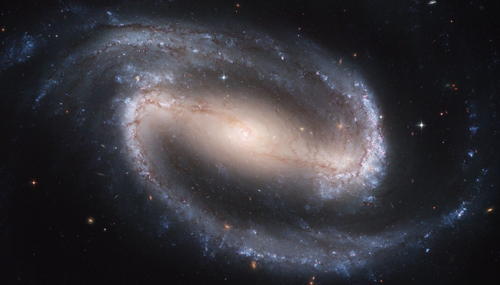
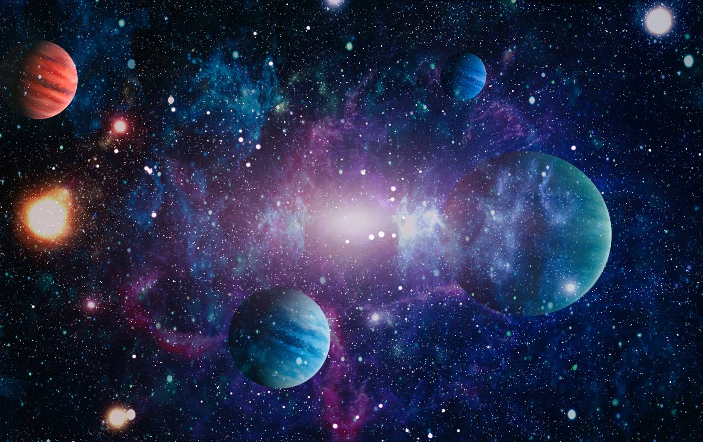

Ce sunt constelațiile?
O constelație este una dintre cele 88 de zone în care este împărțită bolta sau sfera cerească, uneori făcându-se referire doar la o grupare aparentă de stele, care, unite printr-o linie imaginară, se aseamănă cu un anumit obiect, animal, zeu. Pentru majoritatea constelațiilor vizibile din emisfera nordică a Pământului, denumirile există deja din antichitate. Pentru cele din emisfera sudică, denumirile provin de la navigatori și astronomi din epoca Marilor descoperiri geografice, și de aceea aceste constelații poartă denumiri ca de exemplu Microscopul, Mașina Pneumatică etc.
În astronomia modernă constelația este o anumită porțiune din sfera cerească exact delimitată, în jurul figurii imaginare inițiale, astfel încât fiecare obiect ceresc fix (chiar invizibil ochiului omenesc) poate fi atribuit unei constelații. Obiectele cerești fugare, ca de exemplu cele din Sistemul Solar sau și unele din apropierea sa, fiind relativ aproape de Pământ, pot trece în scurt timp dintr-o constelație în alta. Spre exemplu, cometa Lovejoy a trecut în decurs de câteva zile prin constelațiile Orion, Taurul și Andromeda.
Spre deosebire de galaxii, constelațiile nu sunt grupări spațiale reale de stele, ci doar aparente. Deși în general se vorbește despre „stele fixe”, poziția relativă a stelelor pe cer nu este chiar fixă: ea se schimbă simțitor în decursul mileniilor. De aceea, grupările aparente de stele de pe cer se deformează încet dar permanent, devenind cu timpul de nerecunoscut. Din numele constelațiilor se formează și numele stelelor lor, conform următoarei sistematici: o literă greacă (alpha, beta, gamma, etc.) care desemnează luminozitatea stelei, urmată de numele constelației respective în latină, la genitiv. Spre exemplu, cea mai luminoasă stea din Centaurul a fost numită α Centauri, scris și Alpha Centauri (steaua α a lui Centaurus)